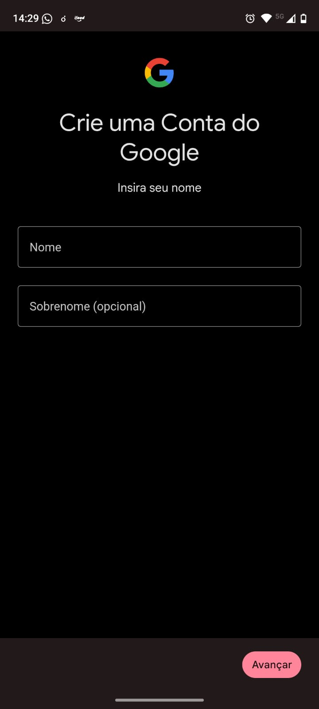

Etapa 1
Criar ou supervisionar uma Conta Google da criança/adolescente
O primeiro passo é verificar se a criança ou adolescente já possui uma Conta Google. Dependendo da idade e da situação da conta, será possível criar uma nova conta infantil ou ativar a supervisão em uma conta existente.
- Se a criança for menor de 13 anos, ou menor que a idade mínima aplicável no país, o responsável poderá criar uma Conta Google para ela e gerenciá-la pelo Family Link.
- Se a criança ou adolescente já tiver uma Conta Google, pode ser possível ativar a supervisão nessa conta existente.
- Para criar uma conta infantil, acesse accounts.google.com/signup.
- Insira as informações solicitadas, como nome e data de nascimento.
- Siga as instruções para configurar a supervisão e leia os Termos e Condições apresentados.
Atenção: adolescentes acima da idade mínima podem criar a própria Conta Google. Nesses casos, o caminho mais adequado pode ser ativar a supervisão em uma conta já existente, em vez de criar uma nova conta infantil.

Tela de criação ou supervisão da Conta Google